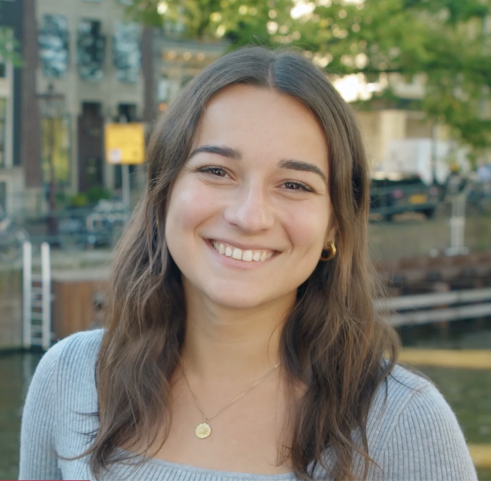

Hi! I'm a PhD Candidate at the Human-Aligned Video AI Lab (HAVA Lab) in the Informatics Institute at the University of Amsterdam, in collaboration with Amsterdam UMC. I am supervised by Prof. Cees Snoek and Prof. Marlies Schijven.
My research focuses on how video artificial intelligence can reliably assess surgical skills. Working at the intersection of Computer Vision and clinical medicine, I aim to build AI systems that improve surgical training, evaluation, and patient safety.
I hold an MSc in Advanced Telecommunication Technologies (Deep Learning for Multimedia Processing track) and a BSc in Telecommunications Engineering from Universitat Politècnica de Catalunya (UPC), Barcelona. Prior to my PhD, I was a Visiting Research Intern at the National Institute of Informatics in Tokyo and at Northeastern University in Boston, and a Computer Scientist at the Barcelona Supercomputing Center.
Please feel free to reach out — always happy to connect!
| Nov 25, 2024 | Our paper "Bridging the gap: exposing the hidden challenges towards adoption of artificial intelligence in surgery" has been published in the British Journal of Surgery! |
| Oct 2024 | Represented HAVA Lab at MICCAI 2024 in Daejeon, South Korea. |
| Sep 01, 2024 | Started my PhD at the Human-Aligned Video AI Lab (HAVA Lab), University of Amsterdam! |